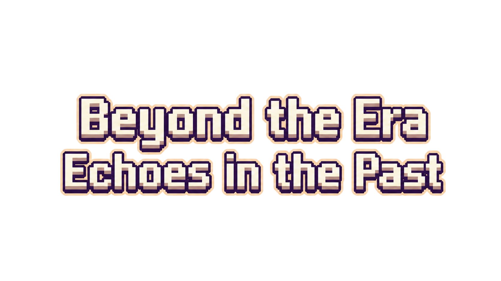

Loading assets...

Click a banner to meet its companions
Settings will be added later.
Art, music, and story direction for Beyond The Era.
Browser games cannot close the tab directly. Return to your desktop or close this tab when you are done.